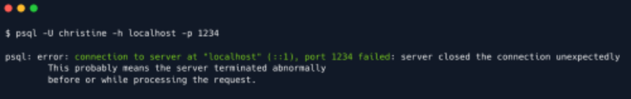

Port forwarding
To use local port forwarding with SSH , you can use the ssh command with the -L option, followed by the
local port, remote host and port, and the remote SSH server. For example, the following command will
forward traffic from the local port 1234 to the remote server remote.example.com 's localhost interface
on port 22 :
Sur la target deja connecté en ssh:
ssh -L 1234:localhost:5432 christine@{target_IP}
When you run this command, the SSH client will establish a secure connection to the remote SSH server,
and it will listen for incoming connections on the local port 1234 . When a client connects to the local port,
the SSH client will forward the connection to the remote server on port 22 . This allows the local client to
access services on the remote server as if they were running on the local machine.
In the scenario we are currently facing, we want to forward traffic from any given local port, for instance
1234 , to the port on which PostgreSQL is listening, namely 5432 , on the remote server. We therefore
specify port 1234 to the left of localhost , and 5432 to the right, indicating the target port.
Puis sur la machine locale:
psql -U christine -h localhost -p 1234
------------------------------------------------------------------------------------------------------------------------------------------------------------------------------------------------------------------------------------------------------------------------
Dynamic Port Forwarding
Instead of local port forwarding, we could have also opted for dynamic port forwarding, again using SSH .
Unlike local port forwarding and remote port forwarding, which use a specific local and remote port (earlier
we used 1234 and 5432 , for instance), dynamic port forwarding uses a single local port and dynamically
assigns remote ports for each connection.
To use dynamic port forwarding with SSH, you can use the ssh command with the -D option, followed by
the local port, the remote host and port, and the remote SSH server. For example, the following command
will forward traffic from the local port 1234 to the remote server on port 5432, where the PostgreSQL server
is running:
ssh -D 1234 christine@{target_IP}
Again, we can use the -f and -N flags so we don't actually SSH into the box, and can instead
continue using that shell locally.
As you can see, this time around we specify a single local port to which we will direct all the traffic needing
forwarding. If we now try running the same psql command as before, we will get an error.
That is because this time around we did not specify a target port for our traffic to be directed to, meaning
psql is just sending traffic into the established local socket on port 1234 , but never reaches the
PostgreSQL service on the target machine.
To make use of dynamic port forwarding, a tool such as proxychains is especially useful. In summary and
as the name implies, proxychains can be used to tunnel a connection through multiple proxies; a use case
for this could be increasing anonymity, as the origin of a connection would be significantly more difficult to
trace. In our case, we would only tunnel through one such "proxy"; the target machine.
The tool is pre-installed on most pentesting distributions (such as ParrotOS and Kali Linux ) and is highly
customisable, featuring an array of strategies for tunneling, which can be tampered with in its configuration
file /etc/proxychains4.conf .
The minimal changes that we have to make to the file for proxychains to work in our current use case is
to:
1. Ensure that strict_chain is not commented out; ( dynamic_chain and random_chain should be
commented out)
2. At the very bottom of the file, under [ProxyList] , we specify the socks5 (or socks4 ) host and port
that we used for our tunnel
In our case, it would look something like this, as our tunnel is listening at localhost:1234 .
Having configured proxychains correctly, we can now connect to the PostgreSQL service on the target, as
if we were on the target machine ourselves! This is done by prefixing whatever command we want to run
with proxychains , like so:
proxychains psql -U christine -h localhost -p 5432
Proxychains can produce an unusual amount of output, but don't be intimidated by it, it is just verbose
in showing you whether a certain connection to a proxy worked or not.
This should hopefully demonstrate the beauty of dynamic port forwarding, as we can specify the target port
freely and in accord with each command we want to run. If we wanted to cURL a webserver on port 80 , for
instance, during local port forwarding we would have to run the tunneling command all over again and
change up the target port. Here, we can simply prefix our cURL command with proxychains , and access
the webserver as if we were on the target machine ourselves; no need for any extra specification- hence,
dynamic.